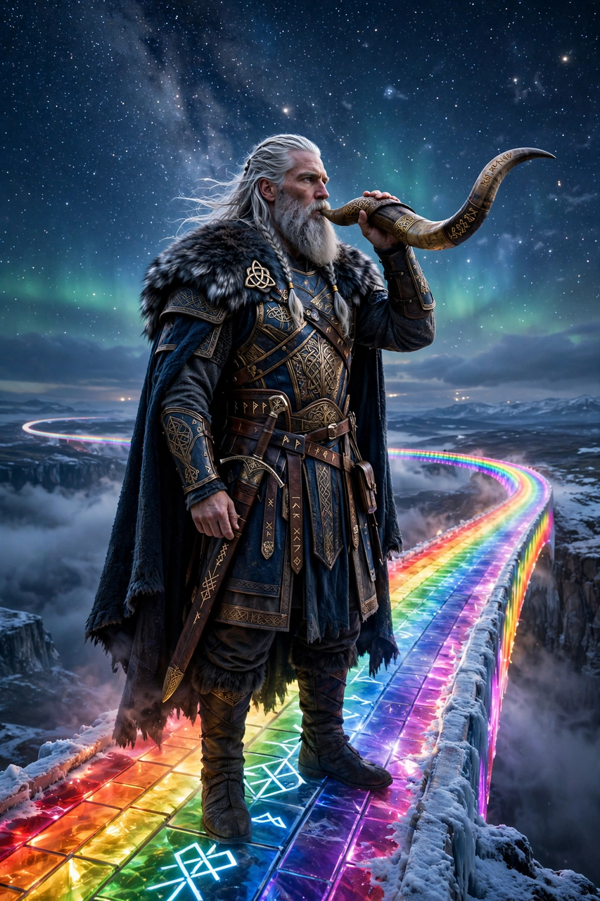

From Wikipedia, the free encyclopedia
| Heimdall | |
|---|---|
| Affiliation | Æsir; watchman of the gods |
| Residence | Himinbjörg, by the bridge Bifröst |
| Attributes | The horn Gjallarhorn; the sword Höfuð; senses sharper than any being's |
| Mothers | Nine mothers (in the eddic tradition) |
| Fate | To sound the horn at Ragnarök and fall fighting Loki |

Heimdall (Old Norse Heimdallr) is the watchman of the gods in Norse mythology, stationed at Himinbjörg where the rainbow bridge Bifröst meets heaven, to guard Asgard against the giants. His senses are the sharpest in the cosmos: he needs less sleep than a bird, sees a hundred miles by night as by day, hears the grass grow and the wool on sheep's backs, and owns the horn Gjallarhorn, whose blast — heard through all the worlds — will announce the coming of Ragnarök.
The short eddic poem Rígsþula tells how Heimdall, travelling under the name Rígr, fathered the ancestors of the three classes of humankind — thralls, farmers and nobles — a rare myth of social origins. In Þrymskviða it is Heimdall, "whitest of the gods", who proposes dressing Thor as the bride Freyja to recover the hammer. A lost poem, the Heimdalargaldr, told of his contest with Loki — both in seal form — for Freyja's necklace Brísingamen. The Prose Edda says he was born of nine mothers, sisters, and that his head was once called "sword" in kennings, for he was struck through by a man's head.
When the sons of Muspell ride over Bifröst and the bridge breaks, Heimdall blows the Gjallarhorn with all his might to wake the gods for the last battle — the sound that begins the end of the world. In the fighting he meets Loki, his old rival, and they kill each other: the watchman and the trickster fall together, the last deaths named in the Völuspá tradition.
Norse mythology · Loki · Odin · Freyja · Yggdrasil